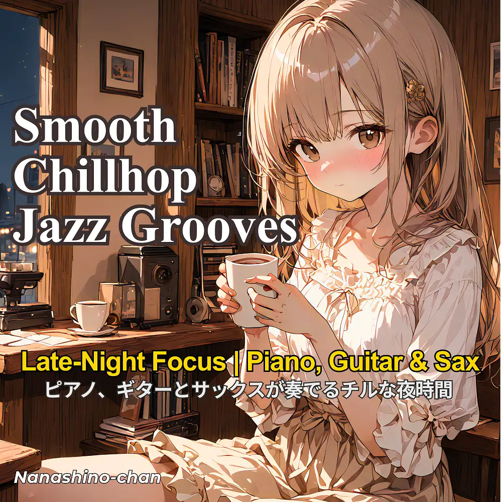

Chillhop · Jazz
Smooth Chillhop Jazz Grooves | Late-Night Focus with Piano, Guitar & Saxophone
Nanashino-chan
Nanashino-chanの「Smooth Chillhop Jazz Grooves | Late-Night Focus with Piano, Guitar & Saxophone」。Chillhop / Jazzを楽しめる全21曲のインストゥルメンタル作品です。「Moonlight Workspace / Quiet Windows」などを収録。気になる曲を試聴して、配信サービスでお気に入りを見つけてください。
2025-11-07 リリース · 21 曲 · Instrumental
アルバムを試聴
気になる音楽を、ここから。
曲を選ぶまでジャケットを表示します。試聴にはYouTubeを使用します。
YOUTUBE PREVIEW
試聴する曲を選んでください
曲を選ぶまでジャケットを表示します。試聴にはYouTubeを使用します。
再生できない場合は、配信サービスでアルバムや曲を開いてください。
配信サービスでアルバムを探す
「検索」のリンクは検索結果を開きます。サービス内でアルバムや曲を選択してください。
収録曲一覧 21
- 01Moonlight Workspace
- 02Quiet Windows
- 03Notes from the Night
- 04Distant Glow
- 05Coffee for One
- 06Between Shadows
- 07Deep Focus Drift
- 08Solitary Streetlights
- 09Gentle Reminders
- 10After Midnight Sketches
- 11Softly, Unspoken
- 12Under the Reading Lamp
- 13Late Hour Letters
- 14Still Awake
- 15Calm Before Dawn
- 16Pages in the Dark
- 17Forgotten Thoughts
- 18When Silence Speaks
- 19Rain on the Window
- 20Dim Room Reverie
- 21Fade into Morning
SNSで使いたい音源を探す
「Nanashino-chan ＋ 曲名」をコピーして、SNSアプリの音源検索に貼り付けてください。音源の表示は地域やアカウントにより異なります。コピー機能は利用許諾を付与するものではありません。